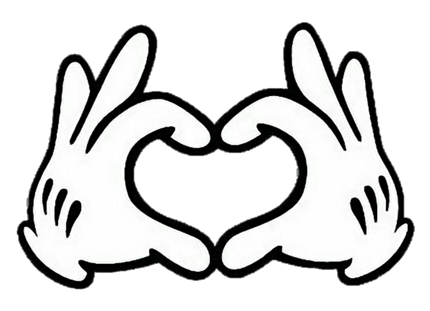
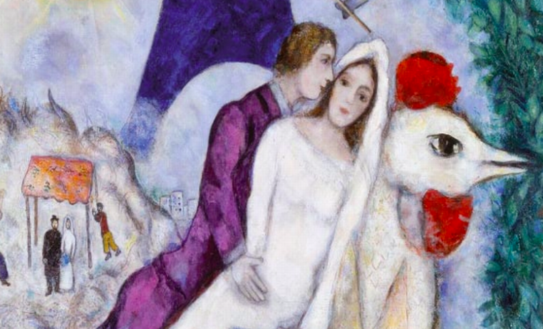
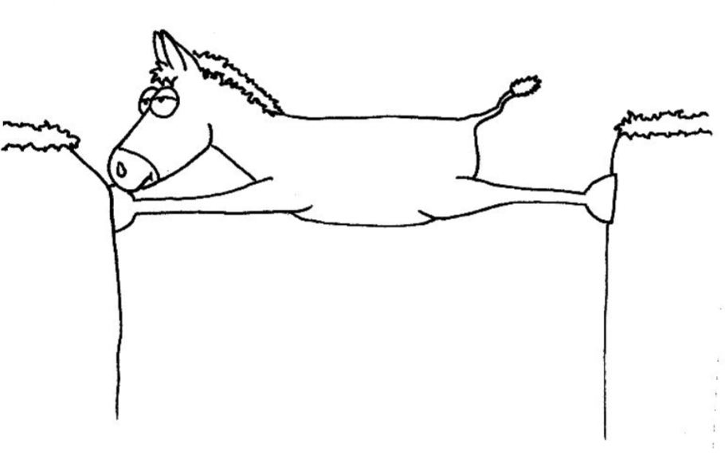

1 / Heal the world
Micheal Jackson

2 / Die Handschuhe
Letteralmente, "scarpe per le mani". Questa volta è davvero un termine caratteristico della lingua tedesca: a parte l'olandese, che condivide molti vocaboli con il tedesco, non ci sono altre lingue in cui "guanti" si dica "scarpe per le mani.
3 / Der Hochzeit
La parola "Hochzeit" è l'unione di hoch ("alto") e zeit ("tempo"); significa quindi letteralmente un grande tempo, dove grande è da intendere come "elevato, importante" e "tempo" come evento, celebrazione. Si tratta quindi del matrimonio. E' interessante notare come l'origine etimologica del termine sia diversa dal caso dell'italiano, in cui la parola è data dall'unione di "mater" e "munus", ovvero il "dovere della madre", un'ideologia partiarcale e maschilista.
4 / Die Eselsbrücke
Letteralmente il "ponte degli asini" o forse sarebbe più corretto dire il "ponte per gli asini". Infatti questa parola serve per indicare una breve frase che può aiutare a ricordare qualcosa di difficile da tenere a mente. Un esempio tratto dalla lingua inglese è "Now We Shall Eat" per ricordare i punti cardinali, mentre nella lingua italiana un grande classico è "Ma con gran pena le reca giù" per ricordare tutti i nomi delle Alpi. Ne servirebbe uno anche per i sette nani...
